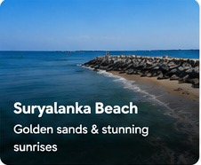

About Suryalanka Beach
Suryalanka Beach, also known as Bapatla Beach, is approximately 9 km from Bapatla according to the Bapatla District administration. The beach is known for sweeping views of the sun, sea and sand and is a popular recreational destination.
The Ministry of Tourism's Incredible India portal describes Suryalanka as a peaceful coastal retreat with a long shoreline, sunrise and sunset views, swimming, walks and nearby accommodation.
Why visit?
Come for the sunrise, open shoreline and relaxed coastal atmosphere. It works well as a half-day or full-day stop while exploring Bapatla and the surrounding coast.